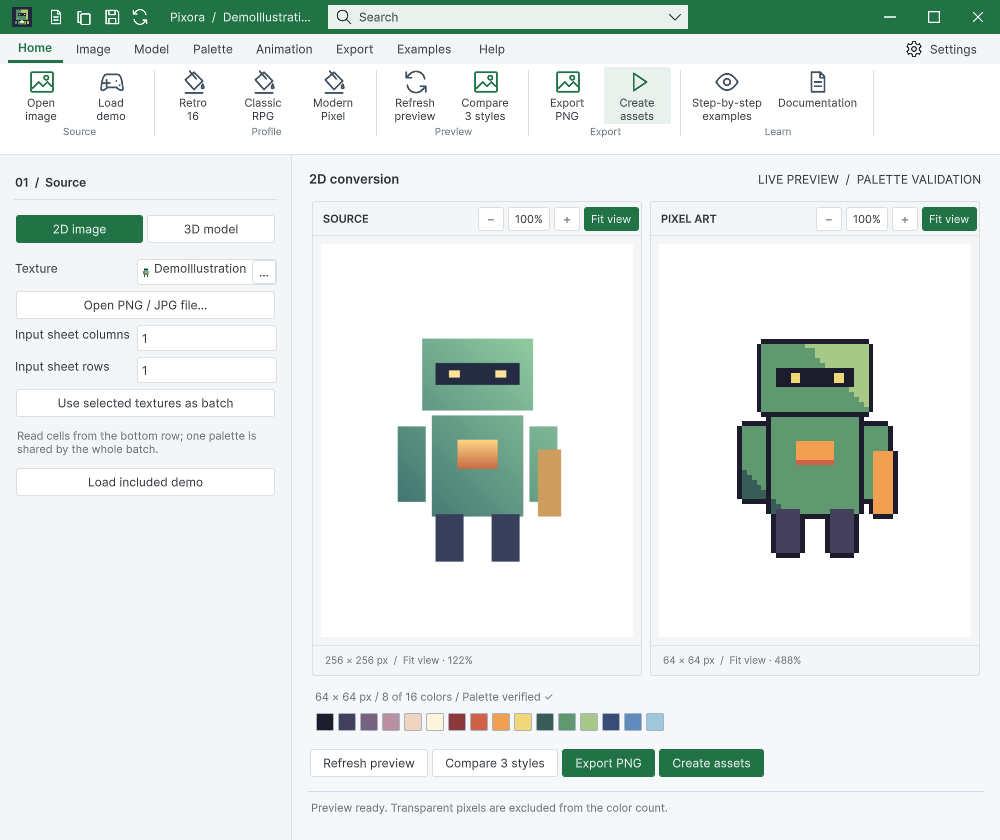
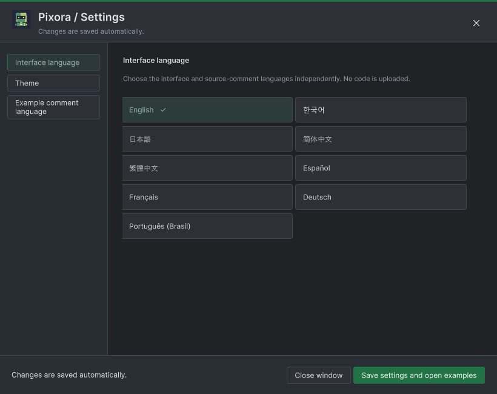

Tracefolio REPORTS & ISSUES
Tracefolio REPORTS & ISSUESPixora의 개별 벡터 아이콘을 DataTable 원본 카탈로그로 교체
완료원본 아이콘과 공통 창 제어를 사용하고 라이트·다크 실제 화면을 다시 캡처했습니다.
작업 결과
Pixora 리본·빠른 실행·설정·창 제어가 공통 원본 렌더러를 사용합니다.
변경 내용
적용 내용
PixoraIcon은 명령을 TemplateIcon의 기존 카탈로그 키에 연결하는 얇은 어댑터입니다. 설정 팝업 닫기도 WindowControls를 사용합니다. 이미지/재생은 원본 아틀라스의 실제 해당 셀을 사용합니다. 9개 언어 가이드 설명과 24개 편집기 화면을 갱신했습니다.



검증
108개 공통 배치 검사 및 실제 창 제어/복원 성공. 9개 UI 언어 화면 캡처; 모든 언어 번역의 독립 감수나 모든 배치의 육안 검토 완료로 확대하지 않습니다. 신규 24개 캡처의 소스 해시 현재 일치. 배포에 실제 샘플 씬 10개 포함, Development 미포함. 소비자 프로젝트의 샘플 분리 상태를 재설치로 복구하고 본체 컴파일 확인.
남은 사항
Windows / Unity 6000.0.83f1에서 검증했습니다. 다른 OS·배율·물리 모니터 연결 변경은 미확인입니다. DataTable 전체 가이드 검사 238건의 과거 화면/소스 불일치는 남아 있으며 통과로 변경하지 않았습니다. 이번에 다시 캡처한 26개 기록은 현재 소스와 일치합니다. Pixora Undo/Redo 기능을 새로 추가한 것은 아닙니다.
작업 시간
- 제안 시간: 40~80분
- 실제로 완료된 시간: 시작 2026-10-30 17:16:52 KST · 구현·실행 검증 및 프로젝트 푸시 완료. 보고 작성 시점 2026-10-30 18:37:25 KST, 경과 80.6분. 보고서 공개 배포 확인은 별도 단계입니다.
- XERJ: 사용 — Tools/Search/Xerj.ps1 Status 및 Search PreserveVisiblePeer 호출. 후보를 현재 WindowFocus/WindowFrame/WorkbookNativeWindow 소스와 네이티브 실행 기록으로 확인했습니다.